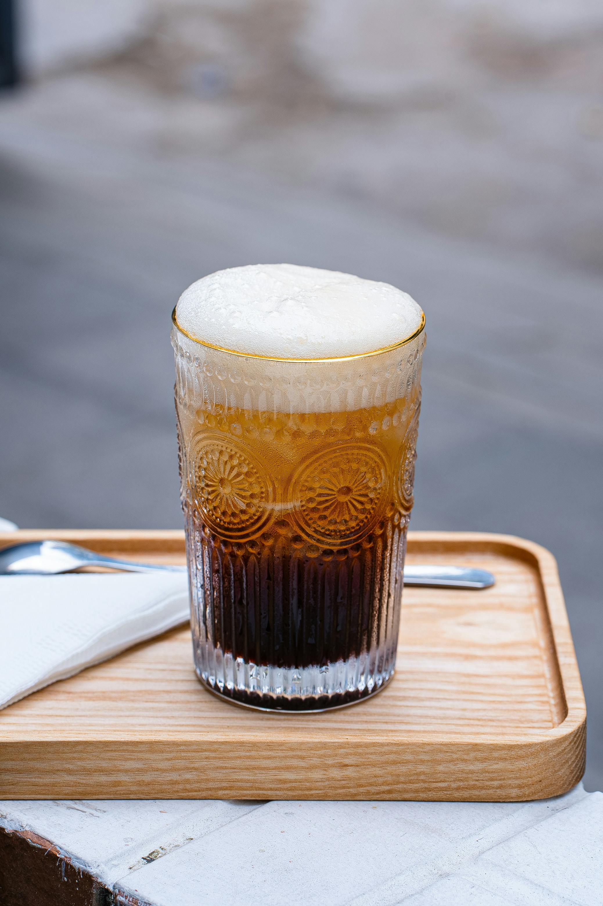

From Bean to Cup, we take you step by step in the universe of coffee beans.
How to choose the best beans and brew the best coffee possible.
(Whole bean coffee gives you control over every little detail of your coffee preparation, including the grind size,
so your coffee is exactly how you like it. {explore now}-button )
More options of Heading
Coffee is always a good idea
Coffee is the common man's gold, and like gold, it brings to every person the feeling of luxury and nobility.
You can't buy happiness, but you can buy coffee, and that's pretty close.
Freddo Cappuccino

Hot days call for cold coffee.Iced coffees can be as simple as dropping some cold milk and ice into your morning coffee
or as complicated as you like if you want to add flavours.
Here we will be telling you about the most demanding coffee in the world cappuccino, but the iced version Freddo Cappuccino.
A freddo cappuccino is an espresso-based iced coffee drink.
It's a coffee recipe that is said to have been created in the 1990s by the Greeks as a way to drink coffee during the hot summer months.
How To Make
Ingredients: 50ml espresso ,100 ml skimmed milk ,Sugar ,Ice cubes.
Brew the espresso. While the espresso is still hot, add in your desired amount of sugar and stir together.
Set the espresso aside and allow it to cool off,then add an ice cube to speed up the cooling down.
Pour into a glass half full of ice.
Now for the fun part - frothing the milk!Take the milk and in a separate cup/jug use the frother
or shaker until foam forms on the top of the milk.
Finally, put everything together by carefully spooning the frothed milk on top of the espresso.
This creates a beautifully layered chilled espresso drink!